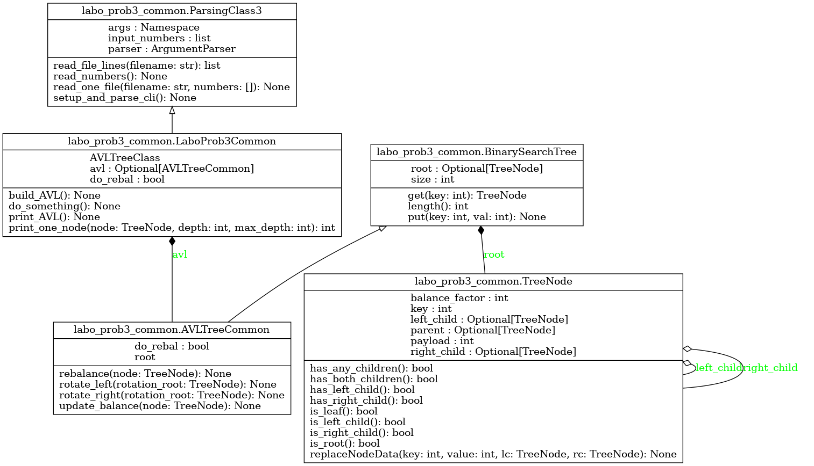

Module labo_prob3_common
Diagramme de classe
{kind=link}
Code du module
Code pour explorer le troisième exercice du laboratoire - APP du cours GIF270
- L’exercice 3 touche les arbres AVL et l’élément suivant :
Redéfinition de la méthode rotate_right
- Note :
Le traitement des arguments a été inclus dans la classe ParsingClass3, qui est utilisée dans le code principal
Tous les arguments requis sont présents et accessibles dans ParsingClass3.args
Le traitement du mode verbose vous donne un exemple de l’utilisation des arguments
Copyright 2018-2025, Frédéric Mailhot et Université de Sherbrooke
- class labo_prob3_common.AVLTreeCommon(do_rebal: bool)[source]
Bases :
BinarySearchTree- Initialisation d’un nouvel arbre AVL :
Le paramètre do_rebal permet de créer (et observer) un abre balancé (AVL) ou non
- Args :
do_rebal (bool) : L’arbre doit être rebalancé dynamiquement (AVL) ou non (arbre binaire standard)
- Returns :
(void) : Au retour, l’objet est initialisé
- rebalance(node: TreeNode) None[source]
Rebalancer un noeud en utilisant des rotations sur ses enfants :
- Args :
node (TreeNoce) : Le noeud courant
- Returns :
(void) : Au retour, le noeud a été rebalancé
- rotate_left(rotation_root: TreeNode) None[source]
Rotation d’un sous-arbre vers la droite :
- Args :
rotation_root (TreeNode) : Noeud sur lequel effectuer la rotation gauche
- Returns :
(void) : Au retour, la rotation gauche a été effectuée et tous les noeuds ont été ajustés
- class labo_prob3_common.BinarySearchTree[source]
Bases :
objectCréation d’un arbre binaire
Code tiré de la section 6.13 du livre de référence Voir : <https://runestone.academy/ns/books/published/GIF270/Trees/SearchTreeImplementation.html>
Initialisation d’une nouvelle instance d’arbre :
- Args :
(void) : Ne fait que créer l’amorce d’un arbre vide
- Returns :
(void) : Au retour, l’objet est initialisé
- get(key: int) TreeNode[source]
Retour du noeud associé à la clée dans l’arbre binaire :
- Args :
key (int) : La clé associée à la valeur à trouver
- Returns :
(TreeNode) : Le noeud associé à la clé (si elle existe dans l’arbre)
- class labo_prob3_common.LaboProb3Common(avltree_class=<class 'labo_prob3_common.AVLTreeCommon'>)[source]
Bases :
ParsingClass3Création de méthodes permettant de créer des arbres AVL - Classe hérite de ParsingClass3, qui lit les paramètres de la ligne de commande
- Initialisation d’une nouvelle instance de LaboProb3 :
Utilise l’initialisation de la classe héritée par LaboProb3 (ParsingClass3)
Par défaut, utilise la classe AVLTreeCommon pour la création future des arbres AVL
Cependant, cette classe peut être redéfinie à la création de l’objet
- Returns :
(void) : Au retour, l’objet est initialisé
- build_AVL() None[source]
- Méthode qui crée l’arbre AVL à partir des nombres inclus dans le tableau self.input_numbers
Utilise la classe AVLTree définie dans l’objet
Cette classe peut être redéfinie lors de la création de l’objet (paramètre facultatif)
Si elle est redéfinie, cela permet d’utiliser une version différente de AVLTree
Par exemple, la version par défaut (AVLTreeCommon) ne contient pas le code pour la rotation droite
- Args :
(void) : Tout se trouve dans l’objet
- Returns :
(void) : Au retour, l’arbre AVL est créé
- do_something() None[source]
Méthode appelée pour créer l’arbre AVL, imprimer la liste initiale de nombres, puis l’arbre AVL (ordonné)
- Args :
(void) : Tout se trouve dans l’objet
- Returns :
(void) : Au retour, l’arbre AVL est créé et a été imprimé
- print_AVL() None[source]
- Imprime à l’écran les valeurs ordonnées dans l’arbre AVL.
À la fin, indique la profondeur maximale de l’arbre
- Args :
(void) : Tout se trouve dans l’objet
- Returns :
(void) : Au retour, l’arbre AVL a été imprimé, ainsi que la profondeur maximale
- print_one_node(node: TreeNode, depth: int, max_depth: int) int[source]
- Imprime à l’écran les valeurs de chacun des noeuds de l’arbre AVL, dans l’ordre :
D’abord les enfants gauches
Ensuite la valeur dans le noeud lui-même
Enfin les enfants droits
- Args :
node (TreeNode) : le noeud à traiter dans l’arbre AVL depth (int) : la profondeur du noeud courant max_depth (int) : la plus grande profondeur observée jusqu’à maintenant
- Returns :
max_depth (int) : la profondeur maximale observée (enfant gauche, noeud lui-même, enfant droit)
- class labo_prob3_common.ParsingClass3[source]
Bases :
objectCréation d’un parser prédéfini pour lire les paramètres de la ligne de commande pour le troisième exercice
- Initialisation d’une nouvelle instance de ParsingClass3 :
Ajoute toutes les valeurs par défaut des paramètres utilisés
Modifie les valeurs redéfinies sur la ligne de commande
- Returns :
(void) : Au retour, l’objet est initialisé, avec la liste de nombres dans le tableau input_numbers
- static read_file_lines(filename: str) list[source]
Lecture d’un fichier” :
- Args :
filename (str) : Le nom du fichier à lire
- Returns :
file_lines (array) : Tableau avec les lignes du fichier lu
- read_numbers() None[source]
Lecture du fichier nécessaire à l’exercice :
- Args :
(void) : Tout se trouve déjà dans l’objet
- Returns :
(void) : Au retour, la liste de nombre est complète
- class labo_prob3_common.TreeNode(key: int, val: int, left: TreeNode = None, right: TreeNode = None, parent: TreeNode = None)[source]
Bases :
objectCréation d’un noeud pour un arbre
Code tiré des sections 6.13 à 6.17 du livre de référence Voir : <https://runestone.academy/ns/books/published/GIF270/Trees/SearchTreeImplementation.html>
Initialisation d’un nouveau noeud d’un arbre
- Args :
key (int) :
- Returns :
(void) : Au retour, l’objet est initialisé
- has_any_children() bool[source]
Indique si un noeud possède au moins un enfant
- Args :
(void) : On observe l’instance elle-même
- Returns :
(bool) : Vrai si le noeud a un enfant à gauche, un enfant à droite, ou les deux, Faux sinon
- has_both_children() bool[source]
Indique si un noeud a deux enfants
- Args :
(void) : On observe l’instance elle-même
- Returns :
(bool) : Vrai si le noeud deux enfants, Faux sinon
- has_left_child() bool[source]
Indique si un noeud a un enfant à gauche
- Args :
(void) : On observe l’instance elle-même
- Returns :
(TreeNode) : Valeur de l’enfant à gauche, ou valeur nulle
- has_right_child() bool[source]
Indique si un noeud a un enfant à droite
- Args :
(void) : On observe l’instance elle-même
- Returns :
(TreeNode) : Valeur de l’enfant à droite, ou valeur nulle
- is_leaf() bool[source]
Indique si un noeud est une feuille d’un arbre
- Args :
(void) : On observe l’instance elle-même
- Returns :
(bool) : Vrai si le noeud n’a pas d’enfant à gauche ni d’enfant à droite, Faux sinon
- is_left_child() bool[source]
Indique si un noeud est l’enfant à gauche de son parent
- Args :
(void) : On observe l’instance elle-même
- Returns :
(bool) : Vrai si le noeud a un parent dont il est l’enfant à gauche, Faux sinon
- is_right_child() bool[source]
Indique si un noeud est l’enfant à droite de son parent
- Args :
(void) : On observe l’instance elle-même
- Returns :
(bool) : Vrai si le noeud a un parent dont il est l’enfant à droite, Faux sinon
- is_root() bool[source]
Indique si un noeud est la racine d’un arbre (dans ce cas, il n’a pas de parent)
- Args :
(void) : On observe l’instance elle-même
- Returns :
(bool) : Faux si le noeud a un parent, Vrai sinon
- replaceNodeData(key: int, value: int, lc: TreeNode, rc: TreeNode) None[source]
Remplace toute l’information contenue dans un noeud
- Args :
key (int) : Clé associée au noeud value (int) : Contenu associé à un noeud (peut être n’importe quel objet) lc (TreeNode) : Nouvel enfant à gauche rc (TreeNode) : Nouvel enfant à droite
- Returns :
(void) : Les champs du noeud sont mis à jour, et il devient le parent de ses nouveaux noeuds enfants
Note
Documentation créée le 20 févr. 2025.